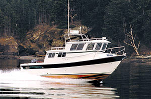

B-Atlas Boat Guide · SSPT-27
Sea Sport 27 Seamaster / Navigator / Pilot
From 1985
The Sea Sport 27 is a long-running Pacific Northwest planing hull introduced in 1985 and offered in Seamaster, Navigator and Pilot deck plans. The shared 26-foot-6-inch hull combines an 8-foot-6-inch beam, enclosed helm options and substantial fishing capability with overnight cruising accommodations.

- Length
- 26.5 ft
- Beam
- 8.5 ft
- Draft
- 2.67 ft
- Hull behaviour
- Planing
- Fuel
- Mixed Diesel/Gasoline
- Propulsion
- Sterndrive
- Engine configuration
- Single gasoline or diesel sterndrive typical; equipment varies by version and year
- Boat family
- Cruiser
- Construction
- Fiberglass
Best for
- All-weather Pacific Northwest cruising and fishing
- Owners balancing trailerable beam with meaningful overnight capability
- Buyers who can select the specific 27-foot deck plan that fits their use
Trade-offs
- Model configuration varies substantially among Seamaster, Navigator and Pilot versions
- Gasoline and diesel sterndrive installations create different operating economics
- Cabin volume remains constrained by the narrow beam
Known concerns
- No model-specific concern has been promoted to B-Atlas’s evidence threshold. This does not mean the model has no age-, condition- or hull-specific risks.
Inspection focus
- Inspect hull/deck structure and hardtop/window sealing
- Verify exact propulsion installation and service history for the model year
- Inspect outboard bracket/transom or sterndrive transom assembly as applicable
- Confirm tank capacities, head arrangement and factory/owner modifications
Continue researching
Related boat models
Sea Sport Explorer 2400 Long-Cabin Pilothouse
24 ft · Planing
Sea Sport XL 2400 Long-Cockpit Pilothouse
24 ft · Planing
Beneteau Antares 8 Cruising / Fishing
26.42 ft · Planing
Albin 27 Sport Cruiser
26.75 ft · Semi-Displacement
Jeanneau Merry Fisher 795 Series 1 / Series 2
26.75 ft · Planing
Beneteau Barracuda 8 Sport-Fishing Pilothouse
26.21 ft · Planing
About this record
B-Atlas preserves uncertainty: missing information remains unknown rather than being treated as a negative. Specifications and guidance describe the model record; individual boats can differ by year, equipment, refit and condition.